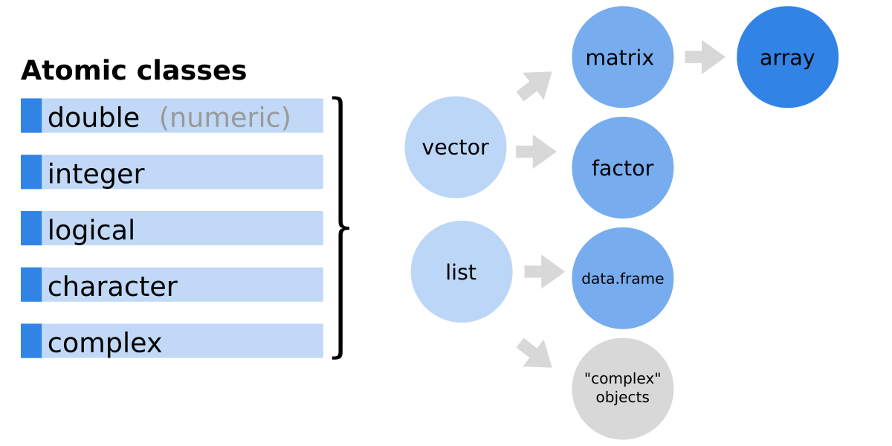
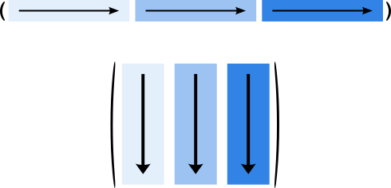
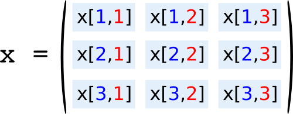

Chapter 10 Matrices
In one of the first sessions I’ve shown the following image which explains how the different objects are connected to each other and/or based on each other. So far, we have learned a lot about (atomic) vectors, one of the basic objects in R. In this session we will see how matrices, data frames, and lists work.

As shown, matrices are based on vectors, while data frames are based on lists, another frequently used object type in R.
But let’s start with matrices first!
10.1 Matrices in R
- matrices are based on vectors
- can only contain data of one class (or mode; as vectors)
- have a dimension attribute (
dim) - can have row and column names (
rownames,colnames)
Matrices can be created using the matrix function (see ?matrix or help("matrix"). According to the R documentation the usage of the matrix function is as follows:
matrix(data = NA, nrow = 1, ncol = 1, byrow = FALSE, dimnames = NULL)data: a data vector (defaultNA)nrow: integer, number of rows (default1)ncol: integer, number of columns (default1)byrow: logical, whether or not to fill by row (default by column)dimnames: optional list of length 2 with rownames and column names.
Function defaults: functions can have required inputs (as seen in the lecture), but also optional input arguments with defaults. If an input has a default (e.g., data = NA) the default value as defined is used if we do not define this input. Thus, the call matrix() will create a matrix containing NA (data = NA) with one row (nrow = 1) and one column (ncol = 1).
Generic methods for matrices
For matrices (and most other objects) a set of so called generic methods or functions exist. Some useful methods for matrices are:
head(x, n = N): show first \(N\) rowstail(x, n = N): show last \(N\) rowssummary(x): object summaryrbind(x1, x2): row-bind two matricescbind(x1, x2): column-bind and column-bindsubset: subsetting a matrix- … and many others …
Note that these are generic methods and they will also work on other objects (e.g., vectors or data frames).
10.2 Create a matrix
The following examples show how to create matrices of different dimensions with and without data. To create a matrix of the dimension \(2 \times 3\) without data we can call:
# NA matrix, dimension 2x3
matrix(nrow = 2, ncol = 3)## [,1] [,2] [,3]
## [1,] NA NA NA
## [2,] NA NA NARemember that the default for the input data is NA. As we have not specified data the whole matrix will be filled with missing values. The two additional arguments define the matrix size with two rows and three columns (\(2 \times 3\) matrix).
Instead of creating an empty matrix we can also directly provide data. In this case, an integer sequence 1:9 is used.
# Matrix containing 1-9 (3x3)
matrix(data = 1:9, nrow = 3)## [,1] [,2] [,3]
## [1,] 1 4 7
## [2,] 2 5 8
## [3,] 3 6 9ncol argument. Our data set is of length 9 (length(1:9)) and we are asking for three rows. There is only one way to fulfil the requirements: creating a \(3 \times 3\) matrix. A graphical representation of what is happening is shown below:

The upper part of the image represents a vector, e.g., the vector of length 9 shown in the example (1:9). The bottom figure shows how the vector is represented in the matrix, a \(3 \times 3\) matrix in this example. By default **the data is filled by column, wherefore the first (left) column will contain the values 1, 2, 3, the next column 4, 5, 6, and the last column the remaining values 7, 8, 9. We can change this behavior …
10.3 Fill by row/column
The matrix by default uses byrow = FALSE and fills in the data by column (as shown above). However, we can set byrow = TRUE to fill in the data by row (top row first). The following two chunks show the effect:
# byrow = FALSE (default)
x <- matrix(data = 1:9, ncol = 3,
byrow = FALSE)
# Print the object
print(x)## [,1] [,2] [,3]
## [1,] 1 4 7
## [2,] 2 5 8
## [3,] 3 6 9# byrow = TRUE
x <- matrix(data = 1:9, ncol = 3,
byrow = TRUE)
# Print the object
print(x)## [,1] [,2] [,3]
## [1,] 1 2 3
## [2,] 4 5 6
## [3,] 7 8 910.4 Column-binding and row-binding (vectors)
Another way to create matrices in R is to row-bind or column-bind vectors. This is very useful if you do have a set of vectors and you want to combine or store them in one matrix object.
Imagine we have two numeric vectors x and y of length 3 and we want to create a matrix which contains x in the first column and y in the second column. To do so, we can simply call the cbind function.
# Two numeric vectors
x <- c(5, 5, 5)
y <- c(11, 22, 33)
# column-binding
z <- cbind(x, y)class(z)## [1] "matrix"print(z)## x y
## [1,] 5 11
## [2,] 5 22
## [3,] 5 33The result of cbind(x, y) is a \(3 \times 2\) matrix. cbind can also be used to combine more than two vectors but note that not all combinations of lengths are allowed (well, R tries to recycle the vectors to match the length of the longest vector and will warn you if this is not possible. Try it out!).
Column names: note that, in case of cbind and also rbind R automatically uses the names of the vectors (here x and y) as row or column name. We will learn how to access and specify row names and column names later in this document.
The counterpart of cbind is rbind which works the very same, but combines the vectors row-wise and not column-wise.
# Two numeric vectors
x <- c(5, 5, 5)
y <- c(11, 22, 33)
# column-binding
z <- rbind(x, y)
class(z)## [1] "matrix"print(z)## [,1] [,2] [,3]
## x 5 5 5
## y 11 22 3310.5 Column-binding and row-binding (matrices)
cbind and rbind can also be used to combine matrices. Again, you have to take care of the dimensions of the matrices. However, let’s assume we have two matrices of the very same dimension (both, x1 and x2 are \(3 \times 2\) matrices). Row-binding and column-binding of matrices works just the same as for vectors:
# Two matrices
x1 <- matrix(1:6, ncol = 2)
x2 <- matrix(101:106, ncol = 2)
# column-binding
cbind(x1, x2)## [,1] [,2] [,3] [,4]
## [1,] 1 4 101 104
## [2,] 2 5 102 105
## [3,] 3 6 103 106# Two matrices
x1 <- matrix(1:6, ncol = 2)
x2 <- matrix(101:106, ncol = 2)
# column-binding
rbind(x1, x2)## [,1] [,2]
## [1,] 1 4
## [2,] 2 5
## [3,] 3 6
## [4,] 101 104
## [5,] 102 105
## [6,] 103 106… except that no automatic row/column names are set. If x1 and/or x2 would have had row and/or column names they would have been kept, of course.
10.6 Matrix attributes
As we now know how to create simple matrices let’s check the attributes. Remember: matrices are “just” vectors with additional attributes! While a vector only has a class and a certain length, matrices come with an additional dimension attribute.
The function dim returns the dimension of the matrix, an integer vector of length \(2\) where the first element corresponds to the number of rows (always rows first), the second element corresponds to the number of column.s
x <- matrix(1:12, nrow = 4)
x # Show matrix## [,1] [,2] [,3]
## [1,] 1 5 9
## [2,] 2 6 10
## [3,] 3 7 11
## [4,] 4 8 12dim(x) # Matrix dimension## [1] 4 3As we all know how ‘vector subsetting by index’ works we can now easily pick the number of rows and columns using:
- `dim(x)[1L]}: number of rows,
- `dim(x)[2L]}: number of columns.
… or use nrow and ncol, two convenient functions to either get the number of rows or columns.
nrow(x) # Number of rows## [1] 4ncol(x) # Number of columns## [1] 3length(x) # Length## [1] 12class(x) # Class## [1] "matrix"is.matrix(x) # Check if is matrix## [1] TRUENote: a matrix also always has a length! This length corresponds to the underlying vector. A \(3 \times 3\) matrix is of length 9 (has 9 elements), a \(5 \times 5\) matrix is of length 25 and so far and so on.
As for all objects we can retrieve the class of the object by calling the class function, and use is.matrix to check whether or not a certain object is of class matrix or not (returns TRUE or FALSE).
10.7 Setting dimension names (, )
Another important attribute of a matrix are the dimension names, or row names and column names (in case of two-dimensional matrices).
They can be accessed and specified using the rownames and colnames functions. Let us create a \(3 \times 3\) matrix …
# Same matrix again
x <- matrix(data = 1:9, nrow = 3, ncol = 3)… and set row and column names using character vectors. As our matrix x has three rows and three columns, we do have to provide three row names and three column names. Note that the naming here is not very useful but demonstrates how they can be defined:
rownames(x) <- c("Row 1", "Row 2", "Row 3")
colnames(x) <- c("Col A", "Col B", "Col C")If we print the matrix x again we can see that all our rows and columns are now labeled.
print(x)## Col A Col B Col C
## Row 1 1 4 7
## Row 2 2 5 8
## Row 3 3 6 9rownames and colnames cannot only be used to set the names but also to get the names from an existing object:
rownames(x)## [1] "Row 1" "Row 2" "Row 3"colnames(x)## [1] "Col A" "Col B" "Col C"dim(x)## [1] 3 3Additional hint: we don’t always have to set all row names and column names, we could also only set or change one specific element by e.g., calling rownames(x)[1L] <- "Fooo" to overwrite the rowname of the first row (1L) with "Fooo".
10.8 Set dimension names when creating the object
Another way is to directly specify the dimension names when calling the matrix function. The function takes up an optional input dimnames (by default this is set to NULL). We can specify a list containing two character vectors (dimnames = list(<rownames>, <colnames>)) where the first vector contains the row names, the second one the column names:
# Create matrix with dimension names
x <- matrix(data = 1:9, ncol = 3,
dimnames = list(c("Row 1", "Row 2", "Row 3"),
c("Col A", "Col B", "Col C")))
# Print the object
print(x)## Col A Col B Col C
## Row 1 1 4 7
## Row 2 2 5 8
## Row 3 3 6 9… to get the very same result as in the section above.
10.9 Practical Exercises (part 1)
Note that there are no solutions in this file, there’s an extra file on OLAT with a detailed solution to the following short exercises. ### Practical exercise 1
Create the following matrices using matrix(...):
## [,1] [,2]
## [1,] NA NA
## [2,] NA NA## [,1] [,2] [,3] [,4] [,5]
## [1,] 1 2 3 4 5
## [2,] 6 7 8 9 10
## [3,] 11 12 13 14 15## A B C
## row_1 1 2 3
## row_2 1 2 3
## row_3 1 2 3
## row_4 1 2 3
## row_5 1 2 3Furthermore, check attributes, length, dimension.
10.9.1 Practical exercise 2
Create the following matrices based on three (logical/numeric) vectors (A/B/C;X1/X2/X3) and row and/or column bind:
## A B C
## [1,] TRUE FALSE FALSE
## [2,] TRUE TRUE FALSE
## [3,] TRUE TRUE TRUE## [,1] [,2] [,3]
## A TRUE TRUE TRUE
## B FALSE TRUE TRUE
## C FALSE FALSE TRUE## X1 X2 X3
## [1,] 1.1 100 -500
## [2,] 2.2 200 500Furthermore, check attributes, length, dimension.
10.10 Subsetting matrices
Subsetting matrices is similar to subsetting vectors except that we can subset by row and/or column. As for vectors we can:
- subsetting by index
- subsetting by name (if set)
- typically (not necessarily) two-dimensional!
When using row and column indizes it is again rows first, columns second. The following image shows the indexing of a matrix. The blue numbers correspond to the row index (thus always 1 for the top row, 2 for the second row, …), the red numbers the index of the columns (1s left, 2 middle, …).

Imagine we do have the following matrix:
x # Demo matrix## Col A Col B Col C
## Row 1 101 105 109
## Row 2 102 106 110
## Row 3 103 107 111
## Row 4 104 108 112Using subsetting by index we can now access specific elements by calling:
x[3, 2]## [1] 107x[1, 3]## [1] 109The first call picks the element in the third row and second column, the second call the element in row 1 and column three.
What happens if we use one single value instead of two (one for the rows, one for the columns) as above?
x[10] # What happens here?## [1] 110Well, a matrix is built on a vector. x[10L] gives us the tenth element of the vector! As matrices are filled by column (!even if you specify byrow = TRUE; that just stores the data in a different order) the tenth element of our \(4 times 3\) matrix is x[3, 2].
You can number them (top down, starting top left). The first column contains the elements 1L, 2L, 3L, 4L, the second column the elements 5L to 8L, the third column starts with 9L followed by the one we are interested in, x[10L] (the element x[2, 3]).
print(x)## Col A Col B Col C
## Row 1 101 105 109
## Row 2 102 106 110
## Row 3 103 107 111
## Row 4 104 108 112Instead of picking single elements of the matrix we can also subset specific rows or columns. We can do this by leaving one index empty (empty means “all”). E.g. x[3, ] means “give me the third row, all columns”:
# Subsetting 3th row
x[3, ]## Col A Col B Col C
## 103 107 111class(x[3, ])## [1] "numeric"length(x[3, ])## [1] 3dim(x[3, ]) # Is a vector!## NULLNote that, by default, R returns us a vector if we subset one specific row or column! The result is no longer a matrix.
The counterpart to row-subsetting is column-subsetting which works the very same way:
# Subsetting 3th column
x[, 3]## Row 1 Row 2 Row 3 Row 4
## 109 110 111 112class(x[, 3])## [1] "numeric"length(x[, 3])## [1] 4dim(x[, 3]) # Is a vector!## NULLIf you do algebra with R you may need a row or column vector:
- Column vector:
matrixwith only one column (an \(N \times 1\) matrix) - Row vector:
matrixwith only one row (an \(1 \times N\) matrix)
This can be achieved by setting the drop = FALSE argument. If drop = FALSE is set R does not drop the matrix attributes (i.e., row names, column names, dimension, class) and the result will be of class matrix:
# Row vector
x[3, , drop = FALSE]## Col A Col B Col C
## Row 3 103 107 111class(x[3, , drop = FALSE])## [1] "matrix"# Column vector
x[, 3, drop = FALSE]## Col C
## Row 1 109
## Row 2 110
## Row 3 111
## Row 4 112class(x[, 3, drop = FALSE])## [1] "matrix"We can, of course, also combine row and column subsetting. The following calls:
- extract the second and third row (
c(2, 3)), but only the first column (1). - extract the fourth row, but only the first and second column (
c(1,2)).
x # Our matrix## Col A Col B Col C
## Row 1 101 105 109
## Row 2 102 106 110
## Row 3 103 107 111
## Row 4 104 108 112# 2nd and 3th row, 1th column
x[c(2, 3), 1]## Row 2 Row 3
## 102 103# 4th row, 1th and 2nd column
x[4, c(1, 2)]## Col A Col B
## 104 108Again, if the result contains only one row or only one column R drops the matrix attributes and simplifies the result to a vector. To avoid that, we can set drop = FALSE again:
# 2nd and 3th row, 1th column
x[c(2, 3), 1, drop = FALSE]## Col A
## Row 2 102
## Row 3 103# 4th row, 1th and 2nd column
x[4, c(1, 2), drop = FALSE]## Col A Col B
## Row 4 104 10810.11 Subsetting matrices with logical vectors
We can also subset matrices with logical vectors. This is used for subsetting with logics. When using logical vectors, these vectors have to match the dimensions (have the same length as the number of rows or columns). An example “doing it by hand”:
- Rows:
c(FALSE, TRUE, FALSE, FALSE)(only 2_nd_ row) - Columns:
c(TRUE, FALSE, TRUE)(only 1_th_ & 3_th_ column) - Attributes:
drop = FALSE(do not drop)
# Our matrix
x## Col A Col B Col C
## Row 1 101 105 109
## Row 2 102 106 110
## Row 3 103 107 111
## Row 4 104 108 112# Subsetting
x[c(FALSE, TRUE, FALSE, FALSE),
c(TRUE, FALSE, TRUE),
drop = FALSE]## Col A Col C
## Row 2 102 11010.12 Subsetting by name
Very useful is subsetting by name. This is, again, similar to subsetting named vectors, except that we do have two dimensions here:
# Only "Col A"
x[, "Col A"]## Row 1 Row 2 Row 3 Row 4
## 101 102 103 104# The element "Row 3", "Col B"
x["Row 3", "Col B"]## [1] 107# Or "Col A" * "Col C"
z <- x[, "Col A"] - x[, "Col C"]
z## Row 1 Row 2 Row 3 Row 4
## -8 -8 -8 -8class(z)## [1] "numeric"names(z)## [1] "Row 1" "Row 2" "Row 3" "Row 4"You may again use drop = FALSE. If not (drop = TRUE, the default) the result will be a named vector.
10.13 Non-existing elements in matrices
From vectors we know that an NA will be returned if we access an element which does not exist, e.g., if we try to access element 10 (x[10L]) in a vector x which only contains 5 elements.
x <- c(1L, 2L, 3L)
x[10] # non-existent, returns NA## [1] NAFor matrices, when using x[<rowindex>, <colindex>] the stroy is a bit different: we will run into an ERROR which looks as follows:
x <- matrix(1:9, nrow = 3)
x[10,10] # non-existent, error!
Error in x[10, 10] : subscript out of boundsWhenever you run into this error: check your indices/names/matrix dimension!
10.14 The subset method
There is a generic method called subset. The method can also be used on vectors (but not very useful). However, when dealing with matrices the subset method becomes interesting, and will be even more important on data.frames.
subset can be used to subset a matrix similar to the ways we have learned above, however, the usage is different and may be more convenient. According to the R documentation (see ?subset or help("subset")):
## S3 method for class 'matrix'
subset(x, subset, select, drop = FALSE, ...)x: object to be subsettedsubset: logical expression, indicating rows to keepselect: expression, indicating columns to keepdrop: drop attributes (default forsubsetisFALSE)
Note: that the default for drop is FALSE when calling subset(...)!
Imagine we have a matrix x which looks as follows:
x # Our matrix## age size kids
## Tom 23 1.79 1
## Lea 34 1.73 3
## Reto 22 1.80 0
## Emma 28 1.51 0The row names correspond to the given name of a set of people, the column names to some attributes (age of the person, body size, and number of kids). We can easily use subset to extract all individuals smaller than 1.75 using the subset argument:
subset(x, subset = x[, "size"] < 1.75)## age size kids
## Lea 34 1.73 3
## Emma 28 1.51 0Note: x[, "size"] < 1.75 does column subsetting by name (takes the column "size") and checks whether or not each element in x[, "size"] is smaller than 1.75. If so, a logical TRUE will be returned, FALSE else. Thus, x[, "size"] < 1.75 is doing nothing else than creating a logical vector (try to execute this to see what’s returned by x[, "size"] < 1.75)!
We can, of course, also use a more complex logical statement, e.g., searching for all individuals smaller than 1.80 and not younger than 30 years old (&, the logical and):
subset(x, subset = x[, "size"] < 1.80 & x[, "age"] < 30)## age size kids
## Tom 23 1.79 1
## Emma 28 1.51 0So far we have only used the subset input argument which subsets on rows. The select argument can be used to subset columns. An example:
subset(x, select = "kids")## kids
## Tom 1
## Lea 3
## Reto 0
## Emma 0This only returns us the kids column.
x[, c("kids"), drop = TRUE]## Tom Lea Reto Emma
## 1 3 0 0Or we combine subset and `select:
subset(x, subset = x[, "size"] < 1.80 & x[, "age"] < 30,
select = c("size", "kids"))## size kids
## Tom 1.79 1
## Emma 1.51 010.15 Matrix Arithmetic
10.15.1 Matrices and scalars
Matrices in R are often used for arithmetics when solving mathematical problems. In principle, all basic arithmetic operations work element-wise as for vectors:
x # Demo matrix## [,1] [,2]
## [1,] 1 3
## [2,] 2 4# Addition
x + 2## [,1] [,2]
## [1,] 3 5
## [2,] 4 6# Multiplication
x * 1.5## [,1] [,2]
## [1,] 1.5 4.5
## [2,] 3.0 6.0The same is true for all other operations (e.g., +, -, *, /, **, %%, sin(...), cos(...), …).
10.15.2 Matrices and vectors
What happens if we e.g., multiply a matrix of dimension \(2 \times 2\) with a vector of length \(2\)?
x # Demo matrix## [,1] [,2]
## [1,] 1 3
## [2,] 2 4dim(x)## [1] 2 2y # Demo vector## [1] 10 100length(y)## [1] 2# Multiplication
x * y## [,1] [,2]
## [1,] 10 30
## [2,] 200 400Note:* R recycles the vector! The vector is shorter than the matrix (vector length 2, matrix length 4). Thus, R simply re-uses the vector two times!
In detail, the following happens: R spans up a matrix y which matches x and looks as follows:
matrix(y, ncol = 2, nrow = 2)## [,1] [,2]
## [1,] 10 10
## [2,] 100 100Afterwards, x and this “y matrix” are multiplied. This does not result in an error or warning as the length of the matrix (4) is divisible by the length of the vector (2).
10.16 Further functions
I don’t want to talk about matrix arithmetics in detail. However, R can do ‘all’ you need, e.g.,:
t(x): transposexdiag(x): diagonal ofxx \%*\% y: matrix multiplicationsolve(x): compute the inverse ofxcrossprod(x, y): cross productouter(x, y): outer productdet(x): calculate determinantqr(x): QR decomposition- … for those interested in linear algebra/math with R, you may have a look at:
- See
?matmultorhelp("matmult")for more details - https://www.math.uh.edu/~jmorgan/Math6397/day13/LinearAlgebraR-Handout.pdf
- https://www.amazon.com/Hands-On-Matrix-Algebra-Using-Applications/dp/9814313696
- or simply use the internet search engine of your choice to find more material.
10.17 Practical Exercises (part 2)
Note that there are no solutions in this file, there’s an extra file on OLAT with a detailed solution to the following short exercises.
10.17.1 Practical exercise 3
Create the following matrix:
## Column A Column B
## Row 1 10 20
## Row 2 10 20
## Row 3 10 20From the matrix above, create:
## Row 1 Row 2 Row 3
## Column A 10 10 10
## Column B 20 20 20and:
## Column A Column B
## Row 1 5 40
## Row 2 5 40
## Row 3 5 4010.17.2 Practical exercise 4
Create the following matrix (medals table, Olympic winter games 2018).
## Bronce Silver Gold
## Norway 11 14 14
## Germany 7 10 14
## Canada 10 8 11
## USA 6 8 9Compute the sum of medals per country (e.g., use a for loop) and add it to the matrix to get:
## Bronce Silver Gold Total
## Norway 11 14 14 39
## Germany 7 10 14 31
## Canada 10 8 11 29
## USA 6 8 9 2310.17.3 Practical exercise 5
Create the following matrix:
set.seed(1234)
x <- matrix(sample(-20:20, size = 25),
nrow = 5, ncol = 5)
x## [,1] [,2] [,3] [,4] [,5]
## [1,] 7 -16 -15 3 20
## [2,] -5 19 -6 13 -18
## [3,] 1 -17 -7 4 11
## [4,] 16 18 -1 0 15
## [5,] -12 5 8 -13 -19Create a nested for loop:
- first, loop over the rows
- second, loop over the columns
Check if the element x[i, j] is negative. If so, multiply it with itself and store it on x[i, j].
10.18 Typical Examples
## name gender eyecolor age height
## 1 Renate female green 33 1.55
## 2 Kurt male brown 22 1.75
## 3 Hermann male brown 18 1.71## region year15 year16 year17 year18
## 1 West 1.24 1.18 1.39 1.30
## 2 Boise 1.37 1.14 1.49 1.49
## 3 Tampa 1.36 1.26 1.62 1.3310.18.1 Convert matrix to data frame
dimnames <- list(NULL, c("A", "B", "C"))
xmat <- matrix(1:9, nrow = 3, dimnames = dimnames)
xmat## A B C
## [1,] 1 4 7
## [2,] 2 5 8
## [3,] 3 6 9# Convert matrix to data.frame
xdf <- as.data.frame(xmat)
xdf## A B C
## 1 1 4 7
## 2 2 5 8
## 3 3 6 910.18.2 Convert data frame to matrix
xdf <- data.frame(name = c("Ben", "Lea"),
age = c(34, 23),
IQ = c(90, 95))
xdf## name age IQ
## 1 Ben 34 90
## 2 Lea 23 95# Convert data.frame to matrix
xmat <- as.matrix(xdf)
xmat## name age IQ
## [1,] "Ben" "34" "90"
## [2,] "Lea" "23" "95"xdf2 <- as.data.frame(xmat, stringsAsFactors = FALSE)
xdf2## name age IQ
## 1 Ben 34 90
## 2 Lea 23 95mean(xdf2$age)## Warning in mean.default(xdf2$age): argument is not numeric or logical:
## returning NA## [1] NAclass(xdf2$name)## [1] "character"class(xdf2$age)## [1] "character"xdf2 <- as.data.frame(xmat) # stringsAsFactors = TRUE
xdf2## name age IQ
## 1 Ben 34 90
## 2 Lea 23 95class(xdf2$name)## [1] "factor"class(xdf2$age)## [1] "factor"